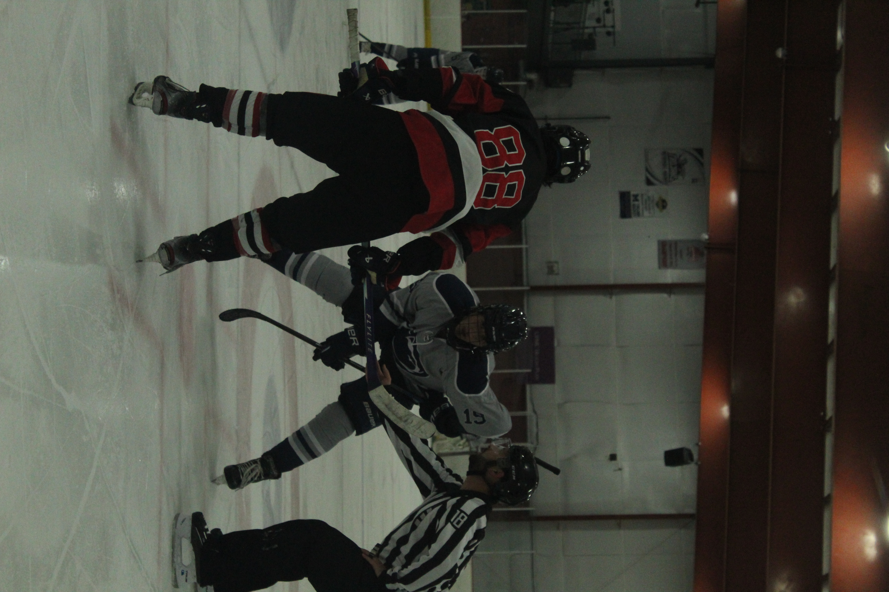
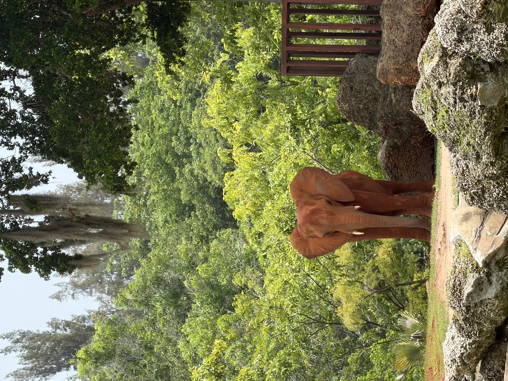
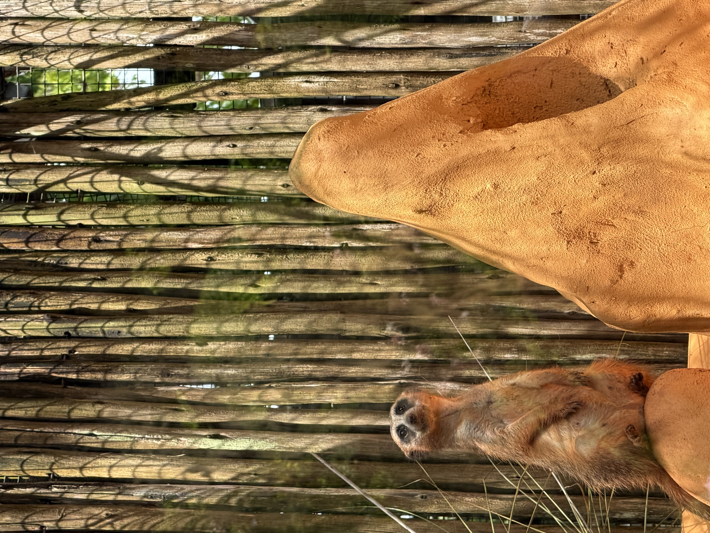
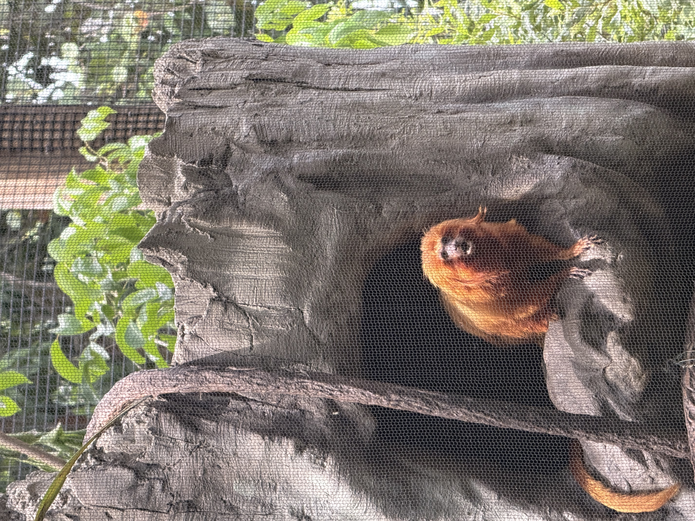

Photography is one of my favorite hobbies. I enjoy capturing different moments and learning new techniques with my camera.
I take photos for the Penn State Behrend hockey team. I enjoy capturing action shots during games and moments on the ice. Photographing hockey has helped me improve my camera skills and learn how to take pictures of fast-moving subjects.



